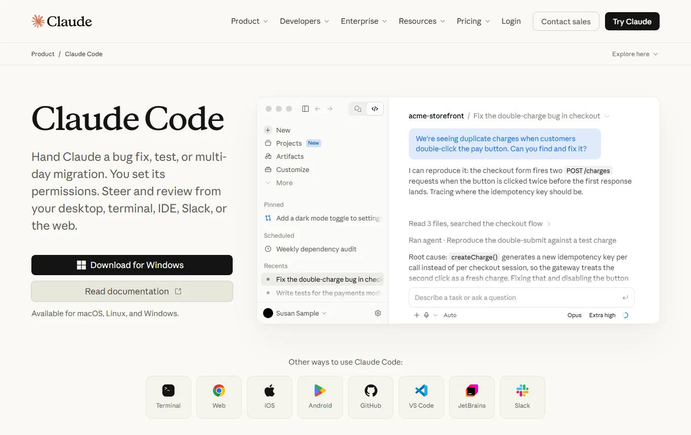
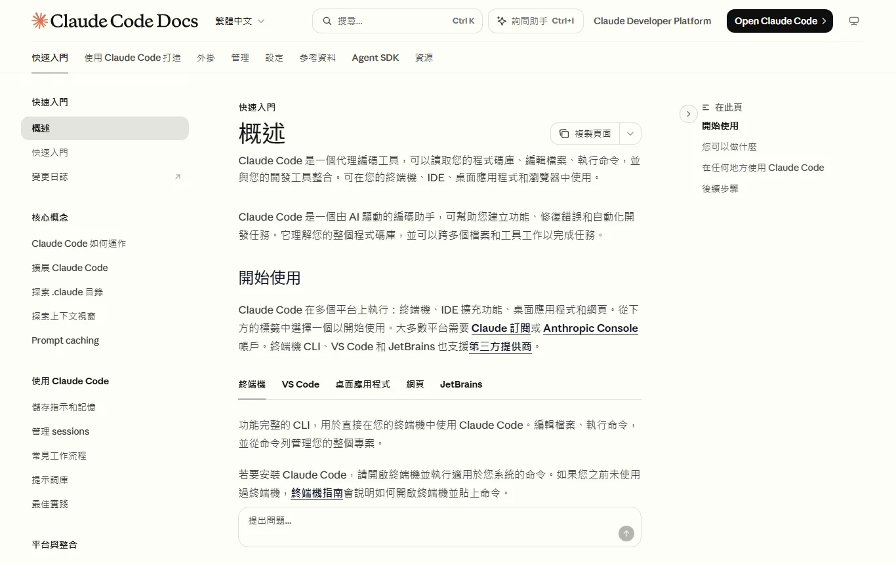

Claude Code：用說的，讓 AI 做出作品
Claude Code 是一種 AI Agent：你用自然語言描述需求，它會自己讀程式、改檔案、執行指令，把作品做出來。如果你完全不看程式碼、只憑結果和感覺跟 AI 來回調整，這種做法就叫 Vibe Coding。我看不懂程式碼，所以就用 Vibe Coding 的方式開發：第 5 堂的 3D 遊戲和這個網站都是這樣做出來的。

01它和聊天助手差在哪？它會自己動手
聊天助手像一位顧問：給你建議和程式，但複製、貼上、執行、除錯都是你自己來。Claude Code 像一位助理：你交代一句話，它自己想步驟、自己做完，再回來跟你報告。這種「會自己動手」的 AI，就叫做 AI Agent（AI 代理人）。
就是教 AI 用「我們做事的方法」做事情。本來你要做的，AI 自動幫你做完。
例如你說「幫我做一個抽獎網頁」，Claude Code 會這樣做：
規劃（Planning）、使用工具（Tool Use）、自我檢查（Reflection），正好就是課堂上介紹的 AI Agent 做事方法。工作很大的時候，它還會把任務分給好幾個 AI 分頭進行，也就是「多代理合作」。
02看不懂程式碼也能開發：這就是 Vibe Coding
因為讀程式、改檔案、執行都由 AI 動手，你可以完全不看程式碼，只憑結果和感覺跟 AI 來回調整：說出想要什麼、看結果、再說哪裡不對。2025 年 2 月，AI 專家 Andrej Karpathy 把這種做法取名為 Vibe Coding（課堂上開玩笑地譯成「隨興程式設計法」）。
Vibe Coding 是一種工作方式，不是工具本身：會看程式的工程師用 Claude Code 時，也可以一起檢查程式。但對看不懂程式碼的我們來說，Vibe Coding 正好讓我們也能開發自己的應用，只要做的東西適合：
- 好玩的小專案
- 自己用、出錯也沒關係的小工具
- 先做出原型，拿去和工程師討論
- 要正式上線給大家用的系統
- 沒人檢查就可能出亂子的程式
課堂上教的成功秘訣：先和 AI 討論需求，再請 AI 整理成「規格書」，比做完再一直叫它改更容易成功。我在第 5 堂就是這樣做的。
03我用它做了什麼？
- 完整的互動網頁或小遊戲：第 5 堂的 3D 工安遊戲有 9 類事件、11 個小遊戲，連手機版面和自動測試都是它做的。
- 照規則持續擴充的網站：這個作品集網站，把規則寫在一份 CLAUDE.md 文件裡，每次新增一堂課，它就照同樣的格式做好新頁面。
- 工作上也能做的小工具：例如抽獎程式、資料整理工具、簡單的查詢頁面。
04怎麼開始？
需要 Claude 的付費訂閱。可以在電腦的終端機、VS Code、桌面應用程式或網頁上使用，官方有繁體中文的說明文件。
